Reading and comparing representations
Reader-friendly version of the 53 lecture slides: the lecture content in normal flow, with figure descriptions and data tables where the figure carries data. Open the presentation.
Slide 1

Reading and comparing representations
Slide 2
Picking up: what can another neuron read from the responses?
Slide 3
Where we left off

Left, the XOR layout in the plane of x1 and x2: four clusters at the corners of a square, green where both inputs have the same sign, blue otherwise; no line separates them. Right, the same points lifted by a third unit x1 times x2: the green clusters rise above a flat gold plane and the blue ones fall below it
Open full-size figure- A linear readout (weighted sum + threshold) is a probe of a representation: what do the responses make easy to read?
- Monkey IT's responses make animacy readable on new views: 93%, against a 63% baseline
- In the plane of , XOR is not linearly separable. Adding a unit that mixes the inputs () changes the representation, and XOR becomes readable
- Today: how many questions can a representation answer? Does an answer carry over to new objects?
Slide 4
Shattering: every yes/no question about the stimuli
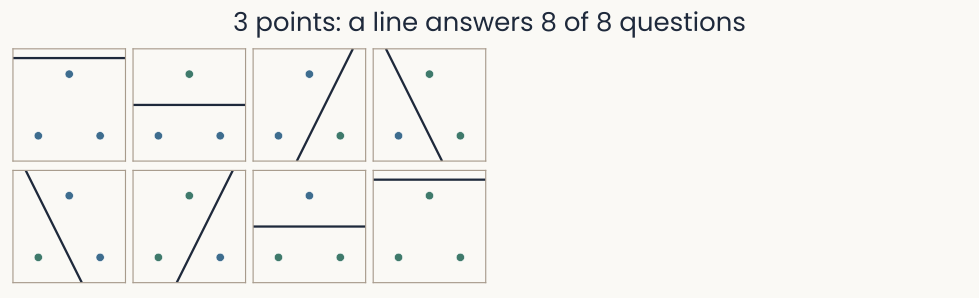
Eight small panels, one for each way to color three points green or blue. The three points sit at the corners of a triangle in the plane of two units. Every panel has a straight line with all green points on one side and all blue points on the other; in the two panels where the three points share one color, the line runs outside them. The title reads: 3 points, a line answers 8 of 8 questions
Open full-size figureToy data, computed: all 8 labelings
- A two-class task is a yes/no question about the stimuli: green = yes, blue = no
- Three stimuli, two units: 2³ = 8 questions. A line answers every one
- A readout shatters a set of stimuli when it can answer every yes/no question about them
Slide 5
Shattering: four stimuli, 16 questions

Sixteen small panels, one for each way to color four points at the corners of a square green or blue. In fourteen panels a straight line separates the green points from the blue ones and is drawn. The two panels in which opposite corners share a color are outlined in red and have no line. The title reads: 4 points, a line answers 14 of 16
Open full-size figureToy data, computed: all 16 labelings
- Four stimuli at the corners of a square: 2⁴ = 16 questions. A line answers 14
- The two it misses (red) put opposite corners together. That is XOR
- No line shatters four points in the plane
Slide 6
Shattering: the lifting unit answers the last two
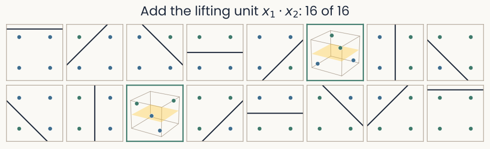
The same sixteen panels. The fourteen separable ones keep their lines. The two XOR panels are replaced by small three-dimensional views, outlined in green: the four points lifted by a third unit, x1 times x2, with a light gold plane between the raised and the lowered points. The title reads: add the lifting unit x1 times x2, 16 of 16
Open full-size figureToy data, computed: all 16 labelings, with and without the lifting unit
- Add the lifting unit from last lecture, , as a third unit. A plane now answers all 16
- More dimensions: more questions a readout can answer
Slide 7
How many questions can neurons answer?

Line plot of the fraction of random yes/no questions a readout answers, from 0 to 1, against points per unit, P over N, from 0 to 4. Three curves, for 2, 10 and 50 units, from Cover's formula, with simulated dots on them. All three stay at 1 up to about one point per unit, cross 0.5 near two points per unit, marked by a dashed line, and fall toward 0 after it. The curve for 50 units drops most steeply; the curve for 2 units falls slowly and crosses 0.5 at 3 points per unit
Open full-size figureComputed: Cover's formula (lines), simulation (dots)
- random stimuli in the space of units, each with a random yes/no answer. Can one readout get every answer right?
- Up to about stimuli, always. At , half the time
- A readout of units can learn about random answers
Slide 8
Shattering accuracy: a score for recorded neurons
- Recorded responses are noisy, so a readout answers a question well or badly, not yes or no
- Shattering accuracy: fit a readout per random split (cat, car, cup vs dog, tree, shoe), score it on held-out trials, average over splits
- 0.5 = guessing. 1.0 = every random split solved
Slide 9
Shattering in real brains: two monkey studies
![Schematic of a macaque brain in two views. Left, the side of the left hemisphere, front to the left: lateral prefrontal cortex around the principal sulcus, in front of the arcuate sulcus, is shaded blue and labelled area 46 for Rigotti 2013 and areas 8, 9 and 46 (dorsolateral prefrontal cortex) for Bernardi 2020. Right, the inner face of the right hemisphere: anterior cingulate cortex (area 24c) is shaded green in the lower bank of the cingulate sulcus, above the corpus callosum, labelled Bernardi 2020, and the hippocampus is drawn dashed in red, deep in the temporal lobe, labelled Bernardi 2020](../images/L06/macaque_areas.svg)
Schematic of a macaque brain in two views. Left, the side of the left hemisphere, front to the left: lateral prefrontal cortex around the principal sulcus, in front of the arcuate sulcus, is shaded blue and labelled area 46 for Rigotti 2013 and areas 8, 9 and 46 (dorsolateral prefrontal cortex) for Bernardi 2020. Right, the inner face of the right hemisphere: anterior cingulate cortex (area 24c) is shaded green in the lower bank of the cingulate sulcus, above the corpus callosum, labelled Bernardi 2020, and the hippocampus is drawn dashed in red, deep in the temporal lobe, labelled Bernardi 2020
Open full-size figure- Lateral prefrontal cortex (area 46): Rigotti et al. (2013), remembering a sequence
- Bernardi et al. (2020), inferring a hidden context: hippocampus (HPC), anterior cingulate cortex (ACC), and dorsolateral prefrontal cortex (DLPFC, areas 8, 9, 46)
Slide 10
The task: remembering a sequence in prefrontal cortex
![Timeline of one trial of the sequence-memory task. The monkey fixates for 1000 ms, sees object A for 500 ms, waits 1000 ms, sees object C for 500 ms and waits 1000 ms more. The trial then forks. In a recognition block, a test sequence follows and the monkey releases a bar if it shows the same two objects in the same order, and keeps holding if not. In a recall block, three objects appear and the monkey looks first at A, then at C. Text below: recorded here, 24 conditions, 4 first objects times 3 second objects times 2 tasks; tasks alternate in blocks of 100 to 250 trials with no explicit cue; 237 lateral prefrontal neurons in 2 monkeys](../images/L06/rigotti_task.svg)
Timeline of one trial of the sequence-memory task. The monkey fixates for 1000 ms, sees object A for 500 ms, waits 1000 ms, sees object C for 500 ms and waits 1000 ms more. The trial then forks. In a recognition block, a test sequence follows and the monkey releases a bar if it shows the same two objects in the same order, and keeps holding if not. In a recall block, three objects appear and the monkey looks first at A, then at C. Text below: recorded here, 24 conditions, 4 first objects times 3 second objects times 2 tasks; tasks alternate in blocks of 100 to 250 trials with no explicit cue; 237 lateral prefrontal neurons in 2 monkeys
Open full-size figure- Two objects in a row, held in memory for a second. Then recognize the sequence (release a bar on a match) or recall it (look at the objects in order)
- A condition is one combination of the task variables: 4 first × 3 second objects × 2 tasks = 24
Slide 11
Prefrontal neurons look messy
![Rigotti et al. (2013) Fig. 3d. Bar chart of one prefrontal neuron's firing rate, 0 to 15 spikes per second, at t = 1.8 s, in all 24 conditions. Under the bars, three rows of labels: the second object, the first object (A to D) and the task (T1 on the left, red bars; T2 on the right, blue bars). Responses vary widely across conditions. The two tallest bars, about 15 and 14 spikes per second, are labelled T2 C A and T2 C D: first object C, second object A or D, task 2. Several conditions give almost no firing. Error bars on each bar](../images/L06/pub_rigotti2013_fig3d.png)
Rigotti et al. (2013) Fig. 3d. Bar chart of one prefrontal neuron's firing rate, 0 to 15 spikes per second, at t = 1.8 s, in all 24 conditions. Under the bars, three rows of labels: the second object, the first object (A to D) and the task (T1 on the left, red bars; T2 on the right, blue bars). Responses vary widely across conditions. The two tallest bars, about 15 and 14 spikes per second, are labelled T2 C A and T2 C D: first object C, second object A or D, task 2. Several conditions give almost no firing. Error bars on each bar
Open full-size figureReproduced from Rigotti et al. (2013), Fig. 3d
- The first lecture: a V1 neuron fired for a bar at one orientation. The PCA lecture: each IT neuron preferred one region of object space
- This prefrontal neuron: spikes per second in all 24 conditions (T1: recognize, T2: recall)
- Its response to the second object depends on the first object and on the task
- Is this mixing noise, or part of the code?
Slide 14
Prefrontal cortex: one neuron, many variables
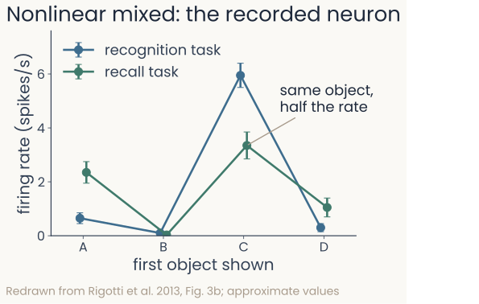
The recorded neuron: firing rate against four objects in two tasks; the two lines are not parallel. Object C drives about 6 spikes per second in the recognition task but about 3.4 in the recall task, while object A drives more firing in recall than in recognition
Open full-size figure
- Recognize or recall: how does one neuron respond to object and task?
- Pure selectivity: the response depends on one variable only (here the object), so the lines of the two tasks lie on top of each other
- Additive mixed selectivity: object effect plus task effect. The lines are parallel, one shifted
- Nonlinear mixed selectivity: the object's effect changes with the task, like the unit. Many prefrontal neurons mix this way
Slide 15
One unit alone: pure and linear units
![Three panels over the plane of x1 and x2, each coloring one unit's response from low (light) to high (dark), with the XOR stimuli as green and blue dots near the four corners. x1, pure: the response changes from left to right only, gold threshold vertical. x2, pure: from bottom to top only, gold threshold horizontal. x1 plus x2, linear: along the diagonal, gold threshold a diagonal line. Under the panels, how many of the four conditions each unit gets right alone: 50%, 50% and 75%. A colour bar at the right](../images/L06/rigotti_tuning_f1.svg)
Three panels over the plane of x1 and x2, each coloring one unit's response from low (light) to high (dark), with the XOR stimuli as green and blue dots near the four corners. x1, pure: the response changes from left to right only, gold threshold vertical. x2, pure: from bottom to top only, gold threshold horizontal. x1 plus x2, linear: along the diagonal, gold threshold a diagonal line. Under the panels, how many of the four conditions each unit gets right alone: 50%, 50% and 75%. A colour bar at the right
Open full-size figureToy data, computed: the XOR stimuli of the last lecture
- Each panel: one unit's response over the plane of , . Gold: its best threshold
- No pure or linear unit answers XOR alone
Slide 16
One unit alone: nonlinear units

The same layout with three nonlinear units. x1 times x2: high in the two corners where the inputs share a sign, low in the other two; its gold threshold follows both axes and gets 100%. The AND unit, max of 0 and x1 plus x2 minus 1: zero everywhere except toward the upper right corner; 75%. The absolute difference of x1 and x2: zero along the diagonal, high toward the other two corners; 100%
Open full-size figureToy data, computed: the XOR stimuli of the last lecture
- and answer XOR alone. The AND unit fires only when both inputs are high
- Nonlinear mixed units respond to combinations of the inputs
Slide 17
The response matrix: linear mixing

Left, a response matrix with four rows, the four XOR conditions (minus minus, minus plus, plus minus, plus plus), and three columns, the units x1, x2 and x1 plus x2, each cell colored and printed with its value. Under it: rank 2, 14 of 16 splits. Right, the four conditions as points in three dimensions with axes x1, x2 and x1 plus x2, labelled by their corner; all four lie on one tilted plane, drawn lightly
Open full-size figure- is the sum of the other two columns: rank 2. A line answers 14 of 16
- Linear mixing never adds a dimension
Slide 18
The response matrix: add the lifting unit

The response matrix with a fourth column, x1 times x2: plus 1, minus 1, minus 1, plus 1. Under it: rank 3, 16 of 16 splits. Right, the points in three dimensions with axes x1, x2 and x1 times x2: the two same-sign corners are raised, the two others lowered, and a plane at x1 times x2 equal to zero separates them
Open full-size figure- Add : no weighted sum of the other columns gives it. Rank 3, 16 of 16
- A nonlinear unit adds a dimension
Slide 19
The response matrix: add the AND unit

The response matrix with the AND unit as fourth column instead of x1 times x2: 0, 0, 0, 1. Under it: rank 3, 16 of 16 splits. Right, the points in three dimensions with axes x1, x2 and the AND unit: only the plus plus corner is raised, and a tilted plane separates the two same-sign corners from the two others
Open full-size figure- The AND unit instead of : rank 3 again, 16 of 16
- A nonlinear unit can add the dimension. The lifting unit from last lecture is one of them
Slide 20
Scaling up: pure and linear populations

Two columns of panels for 200 simulated neurons in the 24 conditions of the sequence task, a third column left empty. Top row, response matrices, 24 conditions by 200 neurons, recognition rows above recall rows, colored from low to high. Bottom row, scree plots of the variance fraction of components 1 to 23. Pure selectivity: seven bars, then nothing; rank 7, PR 6.2. Linear mixed: seven bars, then nothing; rank 7, PR 5.9
Open full-size figureSimulated: 24 conditions, 200 neurons
- Pure: one variable per neuron. Linear mixed: a weighted sum of all three
- Without nonlinear mixing, 24 conditions use only 7 dimensions
Slide 21
Scaling up: a nonlinear mixed population

The same panels with the third column filled: nonlinear mixed selectivity. Its response matrix looks as busy as the other two. Its scree plot has 23 bars that fall slowly from 0.07 to 0.02; rank 23, PR 20.7
Open full-size figureSimulated: 24 conditions, 200 neurons
- Nonlinear mixed: its own response to each condition. The matrices look alike
- Only nonlinear mixing uses all 23 dimensions
Slide 22
Mixed neurons make a high-dimensional population
![Rigotti et al. (2013) Fig. 4b, second delay of the sequence task. Line plot against the number of neurons read out, 0 to 4,000. Left axis: number of two-class splits a readout solves, N sub c, on a log scale from 10 to 10 to the 7; right axis: number of dimensions, 6 to 24. Black line, recorded data: rises steadily to about 23 dimensions at 4,000 neurons, just under the dashed maximum of 24. Grey line, simulated pure-selectivity neurons: levels off near 7 dimensions from about 500 neurons on. Error bars on each point](../images/L06/pub_rigotti2013_fig4b.png)
Rigotti et al. (2013) Fig. 4b, second delay of the sequence task. Line plot against the number of neurons read out, 0 to 4,000. Left axis: number of two-class splits a readout solves, N sub c, on a log scale from 10 to 10 to the 7; right axis: number of dimensions, 6 to 24. Black line, recorded data: rises steadily to about 23 dimensions at 4,000 neurons, just under the dashed maximum of 24. Grey line, simulated pure-selectivity neurons: levels off near 7 dimensions from about 500 neurons on. Error bars on each point
Open full-size figureReproduced from Rigotti et al. (2013), Fig. 4b
- Shattering dimensionality: of how many two-class splits of the conditions a readout solves
- 24 conditions, so at most 24 (dashed line)
- Recorded prefrontal neurons (black): close to 24
- Pure selectivity, simulated (grey): below 8
- Nonlinear mixed selectivity makes the responses of the population high-dimensional
Slide 23
High dimensionality goes with correct choices
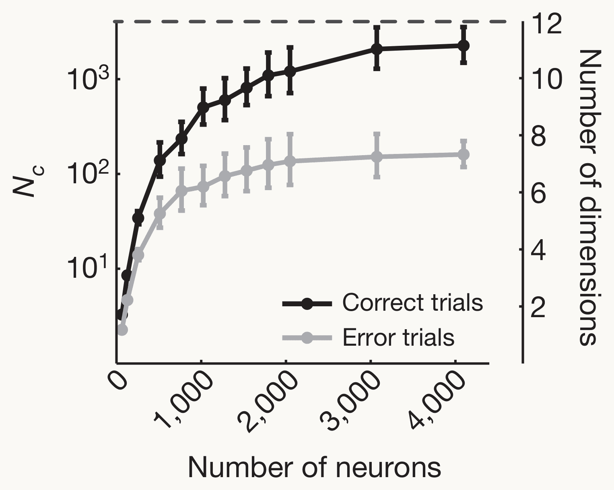
Rigotti et al. (2013) Fig. 5a, recall task. Line plot against the number of neurons read out, 0 to 4,000. Left axis: number of two-class splits a readout solves, N sub c, on a log scale; right axis: number of dimensions, 2 to 12. Black line, correct trials: rises to about 11 dimensions, close to the dashed maximum of 12. Grey line, error trials: levels off near 7. Error bars on each point
Open full-size figure
Reproduced from Rigotti et al. (2013), Fig. 5a
- Recall task only: 12 conditions, so at most 12 dimensions (dashed line)
- Correct trials (black): close to 12
- Error trials (grey): about 7. The objects can still be decoded
- Dimensionality drops on error trials
Slide 24
One boundary for objects never seen: CCGP
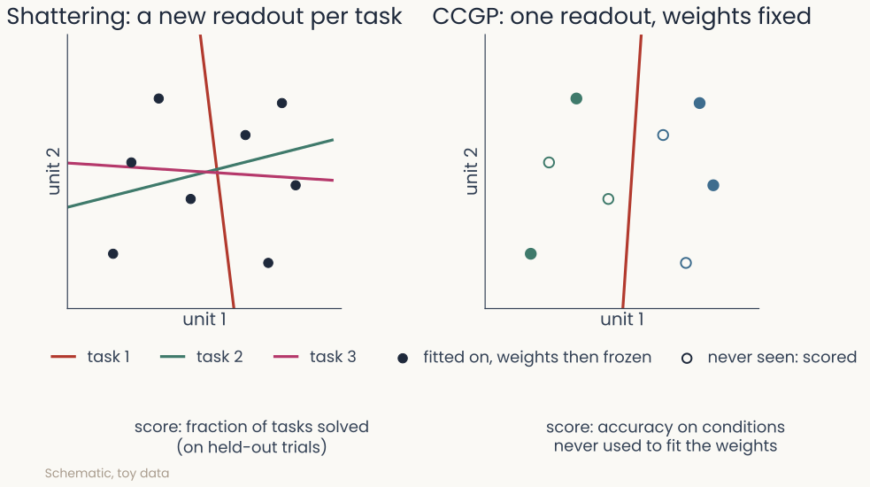
Schematic: a readout for animate against inanimate is fitted on dogs and chairs, then applied to cats and tables. Left, shattering refits a readout for every task on the same objects; right, CCGP fits once and keeps the weights fixed for objects it never saw
Open full-size figure
- High shattering: a new readout solves almost any grouping. But does a readout learned on some conditions work on new conditions?
- CCGP (cross-condition generalization performance): learn "animate or not" on dogs and chairs, test on cats and tables
- With the weights fixed, a high CCGP means animacy is coded the same way for new objects (minute paper)
Slide 25
CCGP: when does one boundary transfer?
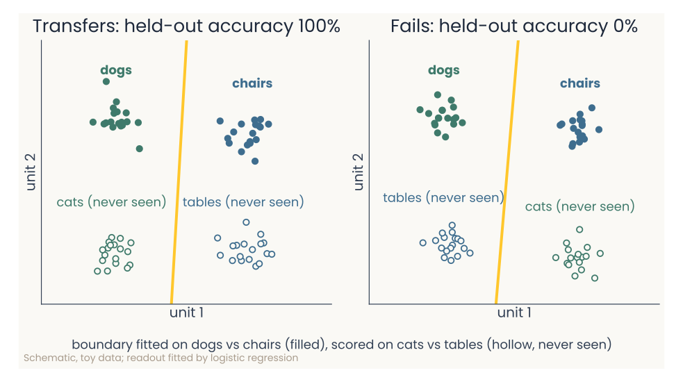
Two toy panels in the plane of two units. Filled dogs (green) and chairs (blue) are separated by a gold boundary; hollow cats and tables, never seen, lie below them. Left, cats sit under the dogs and tables under the chairs, so the boundary classifies every new object correctly: held-out accuracy 100%. Right, cats and tables are swapped, and the same boundary gets all of them wrong:
Open full-size figure
- Left: cats under dogs, tables under chairs. The boundary fitted on dogs vs chairs transfers (100%)
- Swapped: 0%. Random scatter lands in between, near baseline
- Flexible: many splits solvable (high shattering). Abstract: one readout transfers (high CCGP)
- With the weights fixed, a high CCGP means animacy is coded the same way for new objects (minute paper)
Slide 26
The task: a hidden context

Bernardi et al. (2020) Fig. 1a–b. a, one trial as a staircase of grey screens: inter-trial interval 1750 ms, fixation 400 ms, a fractal image for 500 ms, response hold or release within 900 ms, then the outcome, plus or minus. b, the four fractal images in two columns, Context 1 and Context 2, each with the correct action (R release, H hold) and the reward (plus juice, minus none). Context 1, top to bottom: R plus, H plus, R minus, H minus. Context 2: H minus, R plus, H plus, R minus
Open full-size figureReproduced from Bernardi et al. (2020), Fig. 1a–b
- R: release, H: hold. +: juice, −: none. Context 2 flips every action
- Is context coded the same way whatever the action and reward?
Slide 27
The monkeys infer the hidden context

Bernardi et al. (2020) Fig. 1c. Bar chart of average performance in percent, 0 to 100, against image number around a context switch, marked by a magenta line. Last image before the switch: about 95%. First image after it: about 9%. Second, third and fourth images: about 56, 74 and 87%. A dashed line marks 50%, chance for a choice between release and hold. Error bars are 95% confidence intervals
Open full-size figureReproduced from Bernardi et al. (2020), Fig. 1c
- Accuracy on the last image before a switch, then on the first showing of each image after it
- 1st image after the switch: about 9% correct. Nothing warned the monkey
- 2nd to 4th images, not yet seen in the new context: above chance (dashed line, 50%)
- After one surprise, the monkeys switch all the rules
Slide 28
CCGP on the task: two ways to code context
![Bernardi et al. (2020) Fig. 2a–b. Two three-dimensional plots with axes f1, f2 and f3, each showing four conditions: images A and C, rewarded (plus) or not (minus); red is context 1 (A plus, C minus), blue is context 2 (A minus, C plus). Left, the four points sit at random, joined into a tetrahedron, with a yellow plane separating the contexts; bars beside it: shattering dimensionality 1, CCGP for context 0.5. Right, the points form two tight pairs, one per context; pink arrows labelled Train point to the rewarded conditions, blue arrows labelled Test to the unrewarded ones, and two nearly identical planes separate the pairs; bars: shattering dimensionality about 0.7, CCGP for context 1. A legend below: pink bars mark training samples, blue bars test samples](../images/L06/pub_bernardi2020_fig2ab.png)
Bernardi et al. (2020) Fig. 2a–b. Two three-dimensional plots with axes f1, f2 and f3, each showing four conditions: images A and C, rewarded (plus) or not (minus); red is context 1 (A plus, C minus), blue is context 2 (A minus, C plus). Left, the four points sit at random, joined into a tetrahedron, with a yellow plane separating the contexts; bars beside it: shattering dimensionality 1, CCGP for context 0.5. Right, the points form two tight pairs, one per context; pink arrows labelled Train point to the rewarded conditions, blue arrows labelled Test to the unrewarded ones, and two nearly identical planes separate the pairs; bars: shattering dimensionality about 0.7, CCGP for context 1. A legend below: pink bars mark training samples, blue bars test samples
Open full-size figureReproduced from Bernardi et al. (2020), Fig. 2a–b
- Four conditions in three neurons. Red: context 1, blue: context 2. SD: shattering
- Left, at random: every split decodes (SD 1). A context readout does not transfer (CCGP 0.5)
- Right, clustered: train on rewarded, test on unrewarded, CCGP 1. Only context is coded
Slide 29
CCGP on the task: a square, and a square bent
![Bernardi et al. (2020) Fig. 2c–d. Left, the four conditions at the corners of a square in three dimensions: the red segment joins A plus and C minus (context 1), the blue segment joins C plus and A minus (context 2), parallel to each other; a pink plane separates them. Bars: shattering dimensionality about 0.9, CCGP for context and for value both about 0.75. Right, the same square with its corners pushed out of the plane, drawn inside the grey outline of the original square; bars: shattering dimensionality 1, CCGP for context and value about 0.75](../images/L06/pub_bernardi2020_fig2cd.png)
Bernardi et al. (2020) Fig. 2c–d. Left, the four conditions at the corners of a square in three dimensions: the red segment joins A plus and C minus (context 1), the blue segment joins C plus and A minus (context 2), parallel to each other; a pink plane separates them. Bars: shattering dimensionality about 0.9, CCGP for context and for value both about 0.75. Right, the same square with its corners pushed out of the plane, drawn inside the grey outline of the original square; bars: shattering dimensionality 1, CCGP for context and value about 0.75
Open full-size figureReproduced from Bernardi et al. (2020), Fig. 2c–d
- Left, a square: context and value both transfer. XOR fails, so SD < 1
- Right, corners pushed out of the plane: every split decodes (SD 1), CCGP stays high
- A slightly bent square is flexible and abstract at once
Slide 30
Every tool on one population: the cube
![One row of panels for the cube population of the demo model, eight conditions A to H. Distances (RDM): an 8 by 8 matrix of Euclidean distances between condition means, with four distinct distance levels. MDS map: blue dots A to D (context minus) and red dots E to H (context plus) around a ring, short gold segments joining conditions that differ only in context and pointing in different directions; stress 0.24. Scree: three equal bars for components 1 to 3, none after; rank 3, PR 3.0. At right: shattering 0.72, context CCGP 0.95](../images/L06/bern_tools_f1.svg)
One row of panels for the cube population of the demo model, eight conditions A to H. Distances (RDM): an 8 by 8 matrix of Euclidean distances between condition means, with four distinct distance levels. MDS map: blue dots A to D (context minus) and red dots E to H (context plus) around a ring, short gold segments joining conditions that differ only in context and pointing in different directions; stress 0.24. Scree: three equal bars for components 1 to 3, none after; rank 3, PR 3.0. At right: shattering 0.72, context CCGP 0.95
Open full-size figureComputed: the demo's model, seed 1
- The demo's model: context × action × reward, 30 units. Cube: one direction per variable
- RDM and MDS map (the MDS lecture), scree and participation ratio, PR (last lecture)
- On a map, the cube's parallel context edges are lost (stress 0.24)
Slide 31
Every tool on one population: the compromise

The same row for the compromise population, lambda 0.25. RDM: distances more even. MDS map: again a ring of eight dots with short gold segments; stress 0.25. Scree: three large bars and four small ones; rank 7, PR 4.1. At right: shattering 0.80, context CCGP 0.80
Open full-size figureComputed: the demo's model, seed 1
- Compromise: each corner pushed a little off the cube. Rank 7, PR 4.1
- Shattering rises (0.72 → 0.80), context CCGP falls (0.95 → 0.80)
- The RDM and the map barely change. The readout scores do
Slide 32
Every tool on one population: random

The same row for the random population, lambda 1. RDM: every off-diagonal entry the same, every condition equally far from every other. MDS map: gold segments crossing at odd angles; stress 0.31. Scree: seven equal bars; rank 7, PR 7.0. At right: shattering 0.99, context CCGP 0.51
Open full-size figureComputed: the demo's model, seed 1
- Random: every condition equally far from every other. Rank 7, PR 7.0
- Shattering 0.99. Context CCGP 0.51, so nothing transfers
- RDM, map and PR describe the geometry. Only CCGP tests transfer
Slide 33
Single trials in t-SNE: islands mislead

Three t-SNE maps of single trials, 40 per condition, one dot per trial, blue for context minus and red for context plus, each condition's letter beside its group. Cube: the trials form a ring of touching groups, red and blue alternating. Compromise: groups that touch and partly mix. Random: eight tight, well-separated islands. Under the maps: cube shattering 0.72, context CCGP 0.95; compromise 0.80 and 0.80; random 0.99 and 0.51
Open full-size figureComputed: the demo's model, seed 1, perplexity 30 for all three
- Random: cleanest islands, nothing transfers (0.51). Cube: islands touch, context transfers best
- A t-SNE map suggests groups. A readout on the responses tests them
Slide 34
Hippocampus: context transfers, action does not
![Bernardi et al. (2020) Fig. 3e. For hippocampus (HPC), dorsolateral prefrontal cortex (DLPFC) and anterior cingulate cortex (ACC), a vertical axis from 0.4 to 1 labelled shattering dimensionality and CCGP, with a dashed line at 0.5. Short black lines mark the measured CCGP of three variables, each on a set of coloured dots from 100 runs of a perfect-cube model: context in red (HPC 0.96, DLPFC 0.74, ACC 0.81), value of the previous trial in purple (0.79, 0.88, 0.94) and action of the previous trial in orange (0.44, 0.75, 0.90). Short grey lines mark the measured shattering dimensionality (0.70, 0.75, 0.74). Clusters of white dots, the cube model's shattering dimensionality, sit lower, at about 0.60, 0.62 and 0.65](../images/L06/pub_bernardi2020_fig3e.png)
Bernardi et al. (2020) Fig. 3e. For hippocampus (HPC), dorsolateral prefrontal cortex (DLPFC) and anterior cingulate cortex (ACC), a vertical axis from 0.4 to 1 labelled shattering dimensionality and CCGP, with a dashed line at 0.5. Short black lines mark the measured CCGP of three variables, each on a set of coloured dots from 100 runs of a perfect-cube model: context in red (HPC 0.96, DLPFC 0.74, ACC 0.81), value of the previous trial in purple (0.79, 0.88, 0.94) and action of the previous trial in orange (0.44, 0.75, 0.90). Short grey lines mark the measured shattering dimensionality (0.70, 0.75, 0.74). Clusters of white dots, the cube model's shattering dimensionality, sit lower, at about 0.60, 0.62 and 0.65
Open full-size figureReproduced from Bernardi et al. (2020), Fig. 3e
- Black lines: CCGP. Red: context. Orange: previous action. Purple: value (reward or not)
- Grey lines: shattering accuracy. The dots come from a model (next slide)
- HPC: context CCGP 0.96, previous action 0.44
- Context transfers in all three areas. Previous action in HPC does not
Slide 35
Why both can be high: the compromise geometry
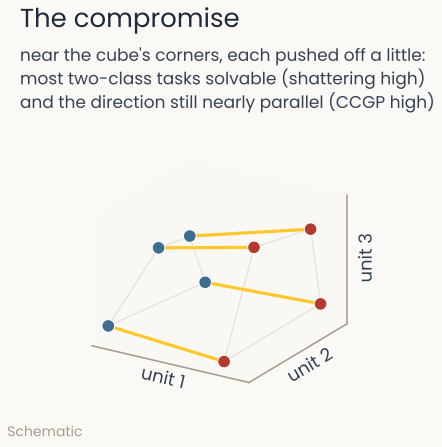
Schematic of the compromise geometry: eight conditions as dots in the space of three units, colored by context, near the corners of a cube but each pushed off a little. Gold edges join conditions that differ only in context and stay nearly parallel; grey edges join the others. Text above: near the cube's corners, each pushed off a little, most two-class tasks solvable (shattering high) and the direction still nearly parallel (CCGP high)
Open full-size figure
- Dots: conditions. Color: context (schematic)
- Cube: one direction per variable. Gold edges join conditions that differ only in context
- Parallel edges: high context CCGP
- Corners pushed off the cube make odd groupings solvable (high shattering)
- A perfect cube with the measured CCGPs has lower shattering (white dots, last slide). The recordings sit near the cube, not on it
Slide 36
Try it: flexible or abstract?

The demo at the compromise setting: shattering accuracy 0.80; CCGP 0.80 for context, 0.83 for action, 0.80 for reward; ordinary decoding 0.93 to 0.96; the gold segments on the condition map are less parallel
Open full-size figure- Toward random: shattering rises, CCGP falls. Decoding (all conditions in training) stays high
Slide 37
In people too: the human hippocampus
![Courellis et al. (2024) Fig. 1e–f. e, a table of the four images, A a plush toy, B a lemon, C a person in a ski helmet, D a car, with the correct response and the reward in each context. Context 1: A left 25 cents, B right 25 cents, C left 5 cents, D right 5 cents. Context 2: A right 5 cents, B left 25 cents, C right 25 cents, D left 5 cents. f, accuracy from 0 to 1 on the last trial before a context switch and the first four trials after it, with the trial sequence drawn below. Black squares, 22 inference-present sessions: about 0.96, then 0.05 on the first trial after the switch, then about 0.89, 0.93 and 0.88 on images not yet seen in the new context. Grey squares, 14 inference-absent sessions: about 0.89, 0.16, then 0.47, 0.66 and 0.68. Dashed line at chance, 0.5](../images/L06/pub_courellis2024_fig1ef.png)
Courellis et al. (2024) Fig. 1e–f. e, a table of the four images, A a plush toy, B a lemon, C a person in a ski helmet, D a car, with the correct response and the reward in each context. Context 1: A left 25 cents, B right 25 cents, C left 5 cents, D right 5 cents. Context 2: A right 5 cents, B left 25 cents, C right 25 cents, D left 5 cents. f, accuracy from 0 to 1 on the last trial before a context switch and the first four trials after it, with the trial sequence drawn below. Black squares, 22 inference-present sessions: about 0.96, then 0.05 on the first trial after the switch, then about 0.89, 0.93 and 0.88 on images not yet seen in the new context. Grey squares, 14 inference-absent sessions: about 0.89, 0.16, then 0.47, 0.66 and 0.68. Dashed line at chance, 0.5
Open full-size figureReproduced from Courellis et al. (2024), Fig. 1e–f
- Four images: press left or right, win 25¢ or 5¢. Context 2 flips every response
- Inference present (black): the first unseen image after a switch is correct. Absent (grey): near chance
Slide 38
Human hippocampus: context becomes abstract
![Courellis et al. (2024) Fig. 2e–f, hippocampus while the image is on, inference-absent against inference-present sessions. e, decoding accuracy from 0.4 to 0.8 for all 35 ways to split the 8 conditions in half, grey open circles, with named splits in colour: context (red-orange) rises from about 0.57 to 0.72, stim pair (purple) from 0.62 to 0.77, parity (yellow) from 0.54 to 0.64, outcome (blue) falls from 0.62 to 0.56, response (green) rises from 0.46 to 0.50. Black lines mark shattering dimensionality, 0.57 and 0.62 in the text. f, CCGP from 0.3 to 0.7: context rises from about 0.50 to 0.63, stim pair from 0.56 to 0.70, parity from 0.46 to 0.53, outcome falls from 0.56 to 0.41, response stays near 0.36. Grey bars show the 5th to 95th percentile of a null distribution, about 0.40 to 0.60. The legend is at right](../images/L06/pub_courellis2024_fig2ef.png)
Courellis et al. (2024) Fig. 2e–f, hippocampus while the image is on, inference-absent against inference-present sessions. e, decoding accuracy from 0.4 to 0.8 for all 35 ways to split the 8 conditions in half, grey open circles, with named splits in colour: context (red-orange) rises from about 0.57 to 0.72, stim pair (purple) from 0.62 to 0.77, parity (yellow) from 0.54 to 0.64, outcome (blue) falls from 0.62 to 0.56, response (green) rises from 0.46 to 0.50. Black lines mark shattering dimensionality, 0.57 and 0.62 in the text. f, CCGP from 0.3 to 0.7: context rises from about 0.50 to 0.63, stim pair from 0.56 to 0.70, parity from 0.46 to 0.53, outcome falls from 0.56 to 0.41, response stays near 0.36. Grey bars show the 5th to 95th percentile of a null distribution, about 0.40 to 0.60. The legend is at right
Open full-size figureReproduced from Courellis et al. (2024), Fig. 2e–f
- Each dot: one of 35 ways to split the 8 conditions (4 images × 2 contexts) in half. Grey bars: chance
- With inference, context (red) and stim pair (purple) become abstract, as in monkeys
Slide 39
Where does abstraction come from?

Johnston and Fusi (2023) Fig. 3a, a schematic. Left, the latent variables drawn as nested squares in the plane of latent dim 1 and latent dim 2. An input model, green layers, maps them to a high-dimensional input layer, a dark bar, labelled low-d to high-d. The multi-tasking model, blue layers, maps that input to a representation layer and then to P task outputs. Each task is a two-way split of the latent space, drawn as a square cut by a red line into category 1 and category 2
Open full-size figureReproduced from Johnston & Fusi (2023), Fig. 3a (CC BY 4.0)
- A first network (green) mixes 5 hidden variables into a high-dimensional input
- A second network (blue) learns random two-class tasks on those variables at once
Slide 40
Many tasks make representations abstract
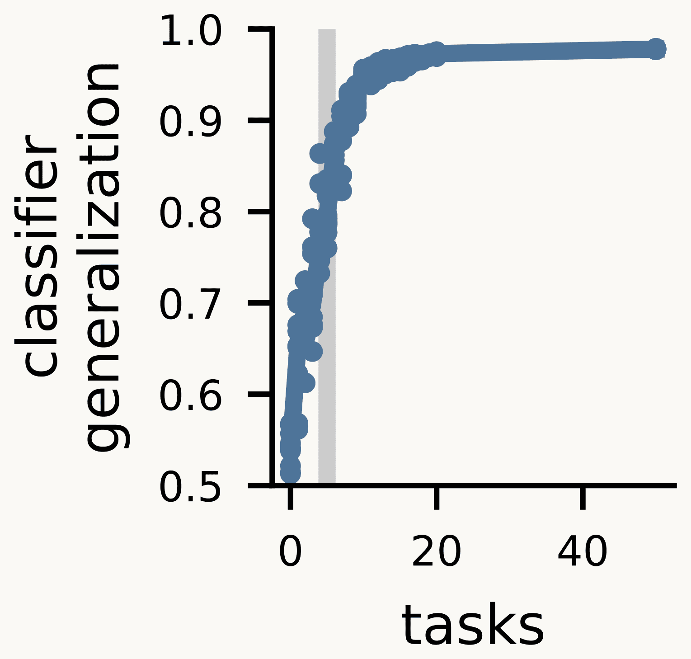
Johnston and Fusi (2023) Fig. 3e, left. Classifier generalization, 0.5 to 1.0, against the number of training tasks, 0 to 50, one dot per trained network. It starts near 0.5 with one task, climbs steeply, passes 0.9 at about 8 tasks and levels off near 0.97. A grey vertical line marks 5, the number of latent variables
Open full-size figure
Reproduced from Johnston & Fusi (2023), Fig. 3e (CC BY 4.0)
- Test: a new readout, fit on half of the variable space, scored on the other half (like CCGP)
- Grey line: 5 tasks, one per hidden variable
- With more tasks than hidden variables, the representation becomes abstract
- A later lecture: how networks learn their weights
Slide 41
Recap: measures of one population
| Measure | The question it answers | Compared with |
|---|---|---|
| Participation ratio | How many directions hold most of the variance, with no threshold? | the number of units , as |
| Readout accuracy | Can a weighted sum and a threshold read a variable from new views? | majority-class baseline |
| Shattering accuracy | How well does one boundary solve an arbitrary two-class task, on average? | guessing, 0.5 |
| CCGP | Does one boundary transfer to objects never seen? | majority-class baseline |
Each score describes one population of neurons or units. How alike are two populations?
Slide 42
Comparing two representations
Does a network layer arrange the same objects the way monkey IT does?
Slide 43
What every comparison score has in common
- What goes in: two response matrices for the same images in the same order (a row per image, a column per neuron or unit), or one matrix and people's judgments
- The score: one number saying how alike the two systems arrange the images
- What it ignores: which neuron matches which unit, and how many each system has. The scores differ in what they ignore
- The question it answers: does a layer arrange objects like IT, or like people's judgments?
Today: RSA (distances between images), CKA (dot products between images), and agreement with people's odd-one-out choices.
For each score, ask what it compares and what it ignores
Slide 44
Same 51 objects, two systems: one RDM each
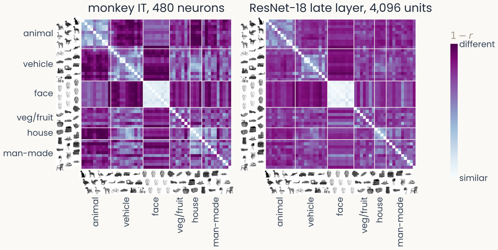
Two 51 by 51 dissimilarity matrices for the same Bao objects in the same category order, with object thumbnails along the edges, from monkey IT (480 neurons, left) and ResNet-18's late layer (4,096 units, right). Both show a light block for faces and lighter blocks within animals and within vehicles
Open full-size figure
Computed: correlation-distance RDMs of the 51 object means, monkey IT (480 neurons) and ResNet-18 late layer (4,096 units)
- No neuron matches a unit, so compare each system's RDM: for every pair of objects
Slide 45
RSA: rank-correlate the two RDMs
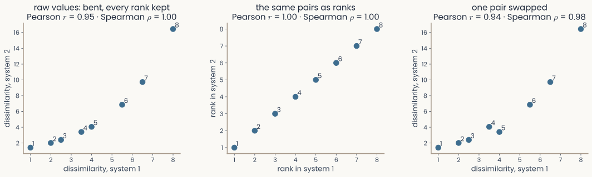
Three scatter plots of eight pairs' dissimilarities in two systems. Left: the second system's values are a bent but rising function of the first's, Pearson 0.95, Spearman 1. Middle: the same eight pairs plotted as ranks, a perfect straight line. Right: two neighbouring pairs swapped, Pearson 0.94, Spearman 0.98
Open full-size figure
From the MDS lecture: toy values
- RSA: rank-correlate (Spearman) the upper triangles of the two RDMs, one entry per pair of objects
- Monkey IT vs ResNet-18's late layer, the 51 objects of the last slide: RSA = 0.71
- RSA depends only on the rank order of the dissimilarities
Slide 46
Two ways to compare two images
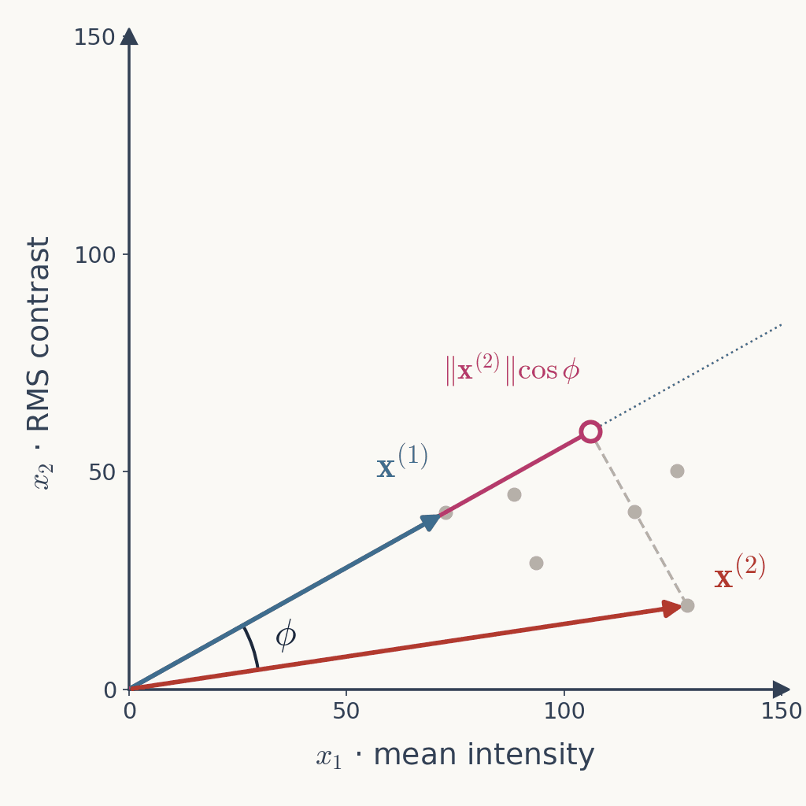
The feature-space plot from the first lectures with the tiger vector x superscript 1 and the elephant vector x superscript 2, the angle phi between them marked at the origin, and the projection of the elephant vector onto the tiger's direction shown as a magenta segment with a dashed perpendicular
Open full-size figure
From the MDS lecture
- Two response vectors: their distance (the length of the difference), or their dot product , which grows with both lengths and with how well they align
- The RDM holds for all pairs of images, which ignores the lengths. A second table holds the dot products, which keep them
- CKA compares the two tables of dot products. It keeps the lengths and uses no ranks
Slide 47
New today: CKA compares dot products
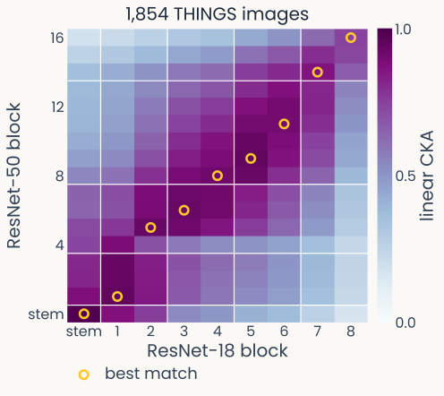
Heatmap of linear CKA between every block of an ImageNet-trained ResNet-18 (x axis, stem and blocks 1 to 8) and ResNet-50 (y axis, stem and blocks 1 to 16), measured on 1,854 THINGS images. A dark band runs from bottom-left to top-right: each ResNet-18 block is most similar to the ResNet-50 block at the same relative depth, marked by gold rings, and early-versus-late pairs are least similar
Open full-size figure
Computed: ResNet-18 vs ResNet-50, 1,854 THINGS images
- CKA (centered kernel alignment), Kornblith et al. (2019): center each unit (subtract its mean over images), build each system's table of dot products between images (its Gram matrix), then compare the two tables as two long lists of numbers
- CKA is 1 when the two differ only by a rotation, a reflection or a uniform rescaling. It is below 1 when one unit is stretched more than another
- A block is a group of layers. The highest CKA is between blocks at the same relative depth
Slide 48
Comparing RSA and CKA
| RSA | CKA | |
|---|---|---|
| Compares | the order of the distances between images | the dot products between images, lengths kept |
| Ignores | any change that keeps that order; how many units, and which | a rotation or reflection of the units; a uniform rescaling; a shift of the mean |
| Assumes | a distance you chose (correlation, Euclidean) | units centered |
| Works on | any data, people's judgments included | response matrices only |
| Weak when | few images make the ranks noisy | a few high-variance directions dominate |
- Both need the same images in the same order. RSA and CKA values are on different scales, so never compare one with the other
- If RSA and CKA disagree, check whether your question is about distances or dot products
Slide 49
Do networks judge objects the way people do?
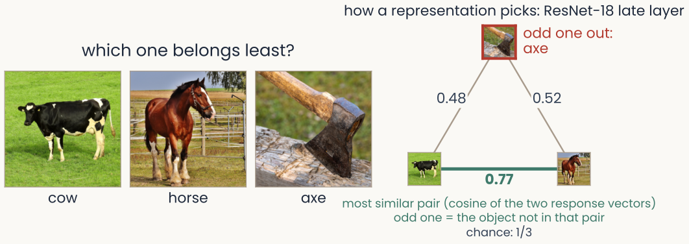
Three THINGS object photographs in a row, a triplet; under them the rule: a representation's odd one out is the object that is not in the most similar pair, by the cosine of the angle between response vectors; a mark shows which object people picked
Open full-size figure
Public-domain THINGS photographs (CC0). Odd-one-out rule applied to ResNet-18's late layer
- Odd-one-out: shown three objects, a person picks the one that belongs least. The THINGS odd-one-out data hold 4.7 million such choices over 1,854 objects (Hebart et al. 2023)
- A network picks the object left out of its most similar pair (cosine similarity). Agreement is the fraction of triplets where network and person pick the same. Chance is 1/3
Slide 50
What sets a network's agreement with people?
- Muttenthaler et al. (2023) scored many networks on the THINGS odd-one-out choices
- The training objective and training data mattered more than architecture or size
- Classification accuracy only says on which side of a category boundary each image falls. It does not say how objects are arranged within a category
- Two networks with the same accuracy can differ in how they arrange a category's objects. Odd-one-out choices show the difference
Slide 51
We have scores. When does a score mean anything?
- One number each: readout accuracy, shattering, CCGP, RSA, CKA, odd-one-out agreement
- Above chance? Shuffle one system's images and score again. The score of a real match drops
- Would it hold for other images? With few images, unrelated systems can look alike
- How high could it be? Neurons are noisy, so two recordings of IT never agree perfectly
The next lecture covers baselines and tests that say whether a score means anything
Slide 52
Further reading for the research trail
Optional: a few research-trail entries over the semester. Any paper mentioned in any lecture qualifies, but papers from this block are preferred.
- Bernardi et al. Cell 2020: hippocampus scores high on shattering and CCGP together
- Rigotti et al. Nature 2013: mixed prefrontal neurons make a high-dimensional population
- Courellis et al. Nature 2024: in the human hippocampus, context becomes abstract with inference
- Johnston & Fusi Nat Commun 2023: networks trained on many tasks learn abstract codes
- Kriegeskorte et al. Front Syst Neurosci 2008: RSA, comparing systems through their RDMs
- Kornblith et al. ICML 2019: CKA finds matching layers in networks of different depth
- Hebart et al. Nat Hum Behav 2020: a few dozen dimensions explain odd-one-out choices
- Muttenthaler et al. ICLR 2023: training data and objective mattered more than network size
Slide 53
Minute paper
Submit on Canvas → Minute papers → Minute Paper 7 (access code read out in class).
Write three brief points in your own words:
- A readout trained to tell dogs from chairs is tested, weights fixed, on cats and tables.
What does a high score tell you about the population, and what is that measure called? - Something you do not yet understand, or a question still open
- Another idea you found interesting, and why it matters for brains, behavior or AI
Credit for a thoughtful attempt, not for being correct.